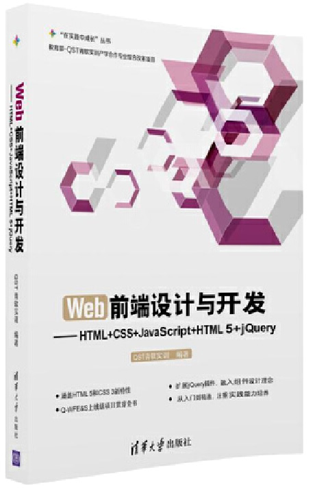

首页 > 书籍下载
《Web前端设计与开发-HTML+CSS+JavaScript+HTML 5+jQuery》PDF下载（高清完整版）
|  | 作者：QST青软实训 |
| 出版时间：2016年09月01日 | |
| 出版社： 清华大学出版社 | |
| ISBN：9787302447757 | |
| 总页数：541 | |
| 总字数：86.7W |
这是一本深入介绍 Web 前端技术的书，内容由浅入深，重点突出，强调动手操作能力，既适合作为教材，也适用于想自学前端开发的读者。
这里提供的是《Web前端设计与开发-HTML+CSS+JavaScript+HTML 5+jQuery》的高清 PDF 下载，内容完整，附带目录标签。
这本书相对比于其它 Web 前端开发的书来说，它的主要特点是采用了贯穿项目，每一章节都是在上一章节的基础上进行实现，对项目逐步迭代、升级，最终形成一个完整的项目，使读者能够快速理解并掌握。
下面是一位读者给出的评价：
知识点非常全面，每个任务都是衔接的，学起来也比较省力。
但是，作为一名有经验的 Web 前端开发人员，我不太建议初学者使用这本书，因为这本书涉及面比较广，初学者可以从 Web 前端的开发基础学起。
书籍目录
- 第1章 HTML语言基础
- 1.1 Internet起源
- 1.2 HTML概述
- 1.3 HEAD元素
- 1.4 文本元素
- 1.5 文档结构元素
- 1.6 列表元素
- 1.7 div与span标签
- 1.8 URL简介
- 1.9 图像标签
- 1.10 超链接标签
- 1.11 贯穿任务实现
- 第2章 表格与框架
- 2.1 表格
- 2.2 框架
- 2.3 贯穿任务实现
- 第3章 表单
- 3.1 表单概述
- 3.2 表单标签
- 3.3 表单域
- 3.4 按钮控件
- 3.5 表单分组
- 3.6 贯穿任务实现
- 第4章 CSS语言基础
- 4.1 CSS概述
- 4.2 CSS的使用
- 4.3 CSS选择器
- 4.4 CSS样式属性
- 4.5 伪类与伪元素
- 4.6 贯穿任务实现
- 第5章 CSS页面布局
- 5.1 盒子模型
- 5.2 内容区
- 5.3 边框
- 5.4 内边距
- 5.5 外边距
- 5.6 DIV CSS页面布局
- 5.7 贯穿任务实现
- 第6章 JavaScript语言基础
- 6.1 JavaScript简介
- 6.2 JavaScript使用形式
- 6.3 基本语法
- 6.4 运算符
- 6.5 流程控制
- 6.6 函数
- 6.7 贯穿任务实现
- 第7章 JavaScript对象
- 7.1 JavaScript对象
- 7.2 Array数组对象
- 7.3 String字符串对象
- 7.4 Date日期对象
- 7.5 Math数学对象
- 7.6 RegExp正则表达式对象
- 7.7 自定义对象
- 7.8 贯穿任务实现
- 第8章 BOM与DOM编程
- 8.1 BOM和DOM模型
- 8.2 window对象
- 8.3 location对象
- 8.4 history对象
- 8.5 navigator对象
- 8.6 document对象
- 8.7 Form对象
- 8.8 Table对象
- 8.9 DOM节点
- 8.10 事件处理
- 8.11 贯穿任务实现
- 第9章 HTML 5基础
- 9.1 HTML 5概述
- 9.2 HTML 5语法特征
- 9.3 HTML 5文档结构
- 9.4 HTML 5表单元素
- 9.5 贯穿任务实现
- 10.1 Canvas绘图
- 10.2 多媒体播放
- 10.3 Web存储
- 10.4 本地数据库
- 10.5 Web Worker
- 10.6 贯穿任务实现
- 第11章 jQuery基础
- 11.1 jQuery概述
- 11.2 jQuery选择器
- 11.3 jQuery基本操作
- 11.4 jQuery事件处理
- 11.5 贯穿任务实现
- 第12章 jQuery进阶
- 12.1 jQuery文档处理
- 12.2 遍历节点
- 12.3 jQuery动画效果
- 12.4 数组和对象操作
- 12.5 jQuery插件
- 12.6 贯穿任务实现
- 附录
- 附录A HTML 5新增和弃用标签
- A.1HTML 5新增的标签
- A.2HTML 5弃用标签
- 附录B HTML 5浏览器支持情况
- 附录CJSON语法C.1JSON简介
- C.2JSON基本结构
- C.3JSON复杂结构
- C.4JSON解析方法
- 附录D常用的校验正则表达式
- 附录E IE 11开发人员工具E.1开发人员工具简介
- E.2使用F12工具·ⅩⅩ·
书籍下载
一键登录，免费下载完整版 PDF，文件名称：《Web前端设计与开发-HTML+CSS+JavaScript+HTML 5+jQuery》.pdf